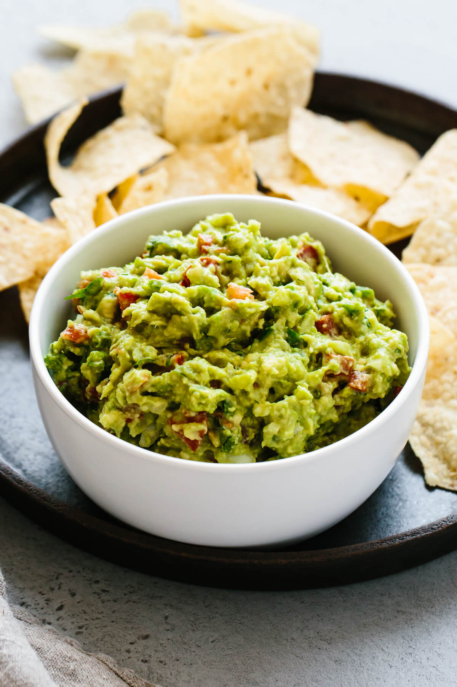

Guacamole
Ingredients
- 3 ripe avocados
- 1/2 small yellow onion, diced
- 2 Roma tomatoes, diced
- 3 tbsp finely chopped fresh cilantro
- 1 jalapeno pepper, diced
- 2 garlic cloves
- 1 lime, juiced
- 1/2 tsp sea salt
Instructions
- Slice the avocados in half, remove the pit, and scoop into a mixing bowl.
- Mash the avocado with a fork and make it as chunky or smooth as you would like.
- Add the remaining ingredients and stir together. Give it a taste test and add a pinch more salt or lime juice if needed.
- Serve the guacamole with tortilla chips.
Photos
